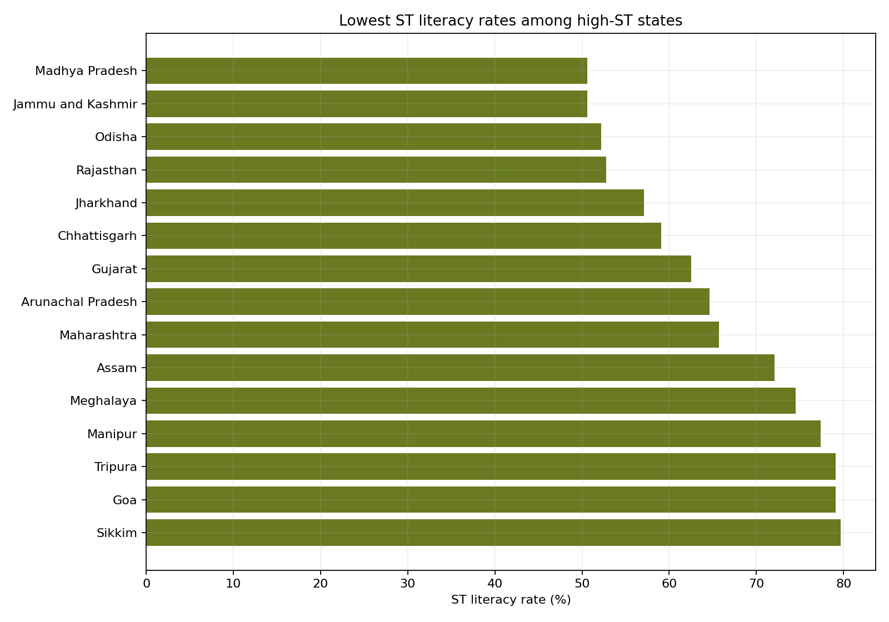

When Schooling Does Not Become Security
Across high-ST states, education indicators do not move neatly with poverty and labour outcomes. Dropout, literacy gaps, gender disadvantage, and livelihood distress tell a more useful policy story than enrolment alone.
Short version. The project started with a simple question: do better ST education outcomes correspond to better employment and lower poverty? The answer is mixed. Literacy by itself is not a strong explanation of poverty in the high-ST sample. Secondary dropout and livelihood distress are more useful warning signals. This points toward a policy frame where states are not just ranked, but classified by the kind of disadvantage they face.
Outline
The question
The main project question is:
How do differences in educational outcomes among Scheduled Tribe populations relate to employment and poverty across high-ST states in India, and which states require different policy priorities?
This is not just a descriptive ranking exercise. A ranking can tell us where outcomes are worse, but it does not tell us what kind of intervention a state needs. A state with low literacy and high dropout needs a different policy package from a state where enrolment looks reasonable but labour outcomes remain weak.
Main findings
The analysis points to four useful claims. These should be treated as exploratory, not causal, because the state sample is small and several indicators come from different years.
- Dropout is more policy-relevant than enrolment. Higher secondary dropout is more clearly associated with ST poverty than GER is. This suggests that retention matters more than access alone.
- Literacy alone is too narrow. ST literacy does not explain poverty cleanly in the high-ST sample. Literacy matters, but it is only one part of the education-to-livelihood pathway.
- Education does not automatically become livelihood security. Some states show reasonable schooling participation but still have weak work outcomes, high poverty, or MGNREG dependence.
- Gender parity in enrolment is not the same as gender empowerment. Girls' enrolment parity does not automatically translate into stronger female literacy or female work participation.
Evidence from the analysis
1. Literacy does not explain ST poverty by itself
If literacy were the whole story, states with higher ST literacy would consistently show lower ST poverty. The relationship is weak in the high-ST sample. That does not make education unimportant. It means the project should avoid treating basic literacy as a complete proxy for education quality, retention, or economic mobility.

2. Compound disadvantage is visible when indicators are combined
A composite state disadvantage score is useful because several states perform badly across multiple dimensions at once. Odisha, Madhya Pradesh, Jharkhand, Maharashtra, and Rajasthan appear near the top of the priority list because education disadvantage and economic vulnerability overlap.

3. Low literacy remains a foundational concern
Even though literacy alone does not explain everything, low ST literacy still matters. States with low literacy, large literacy gaps, and low female literacy need foundational learning and adult literacy interventions before higher-level education and employment policies can work well.

Interpretive move. The strongest version of the project is not "education lowers poverty." The stronger claim is: "education indicators only become policy-relevant when we separate access, retention, inequality, and livelihood translation."
State typology
The project classifies states into groups so that recommendations can be more targeted.
| Type | States | Policy meaning |
|---|---|---|
| Compound education and economic disadvantage | Chhattisgarh, Gujarat, Jharkhand, Madhya Pradesh, Maharashtra, Odisha, Rajasthan, Dadra and Nagar Haveli and Daman and Diu | Use combined education-retention and livelihood support. |
| Economic and labour vulnerability | Lakshadweep, Nagaland, Tripura | Connect schooling with local work pathways and skills. |
| Education-system disadvantage | Jammu and Kashmir | Prioritize literacy gaps, female literacy, and district-level targeting. |
| Lower composite risk with watchlist states | Arunachal Pradesh, Assam, Goa, Manipur, Meghalaya, Mizoram, Sikkim | Maintain monitoring and identify weaker districts or groups. |
Policy implications
The policy recommendations should follow the type of disadvantage, not just the rank of a state.
- For dropout-heavy states: strengthen secondary retention through hostels, transport, scholarships, transition support, and dropout tracking.
- For literacy-gap states: target ST-general population literacy inequality with remedial learning, adult literacy, and ST-focused monitoring.
- For education-livelihood mismatch states: connect upper-secondary education with skills, placements, local economic activity, and public employment pathways.
- For gender disadvantage states: track female literacy and work outcomes, not just girls' enrolment or GPI.
- For MGNREG distress states: improve work availability while reducing the schooling costs faced by vulnerable ST households.
Data and limitations
The analysis uses cleaned state-level datasets on ST literacy, GER, dropout, poverty, labour-force indicators,
MGNREG, scholarships, gender parity, demographics, and tribal village concentration. The main analysis file is
state_analysis_dataset_high_st_states.csv.
The main limitation is data alignment. Not every dataset covers the same year or the same states. ST poverty is available for only part of the high-ST sample. For that reason, the results should be presented as exploratory evidence for policy prioritization, not as causal estimates.
Notes
- The state disadvantage score is a project-created composite measure. It is meant to guide interpretation, not replace official rankings.
- GER measures schooling participation, but it does not directly measure learning quality, retention, or labour market absorption.
- Correlations in the notebook are reported with sample size and p-values. Small sample sizes mean the direction and policy interpretation matter more than formal statistical certainty.